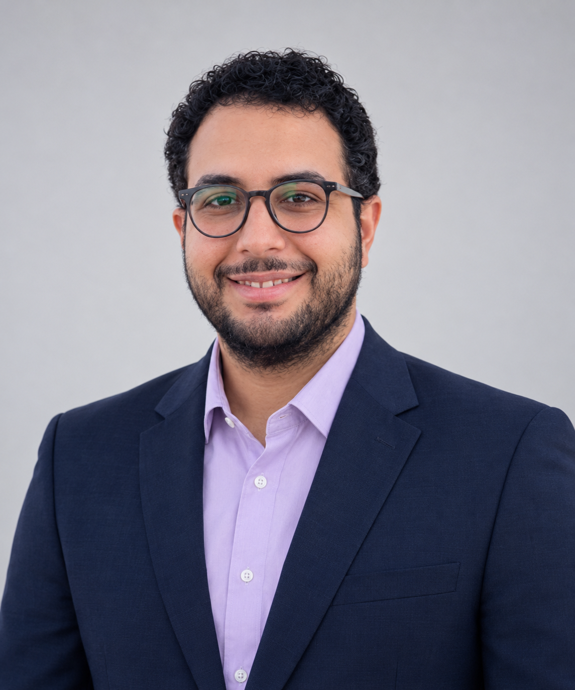

Vermessungsingenieur & Geoinformatiker
Spezialisiert auf Ingenieurvermessung, UAV-Photogrammetrie und Scan-to-BIM Workflows im modernen Straßen- und Infrastrukturbau.

Präzisionsvermessung trifft moderne Digitalisierung
Tägliche Erfahrung im Straßen- und Tiefbau bei Eurovia Koblenz. Verantwortung für Bauvermessung, Absteckung, Maschinensteuerung und exakte Massenermittlung vor Ort.
Begeisterung für den Einsatz moderner UAV-Drohnensysteme zur effizienten 3D-Datenerfassung, Erstellung digitaler Geländemodelle (DGM) und hochgenauer Punktwolken.
Wissenschaftlicher Hintergrund (M.Eng. Geoinformatik) mit Spezialisierung auf die Modellierung von Bestandsbauwerken (Campus-Brücke Mainz).
Stationen meiner Karriere
Gesamtverantwortung für die vermessungstechnischen Abläufe im Straßen- und Tiefbau. Erstellung von Bestandsplänen, DGM, Massenermittlung mit iTWO, 3D-Baggersteuerung und Baustellen-Absteckung.
Qualitätssicherung und Applikationstests für Trimble Mobile Manager, Trimble Access Monitoring und TerraFlex. Durchführung technischer Messkampagnen und internationale Teamarbeit.
Mitwirkung an großen Gas-, Petrochemie- und Infrastrukturprojekten (darunter West Nile Delta Gas Development, Ethydco Complex und Raffinerieprojekte). Präzise Absteckungen und Kontrollmessungen.
Akademischer Hintergrund
Masterthesis über Scan-to-BIM technischer Bauwerke am Beispiel der Campus-Brücke Mainz.
Fundierte Ausbildung in Vermessungswesen, Geodäsie, Kartographie und mathematischen Grundlagen des Ingenieurbaus.
Technisches Know-how & Software
Campus-Brücke Mainz | 3D Scan-to-BIM
Interaktive 3D Brücken- & Querschnitts-Simulation (Solid & PointCloud)
Haben Sie Fragen zu Projekten im Bereich Ingenieurvermessung, UAV-Photogrammetrie oder Scan-to-BIM? Schreiben Sie mir direkt.